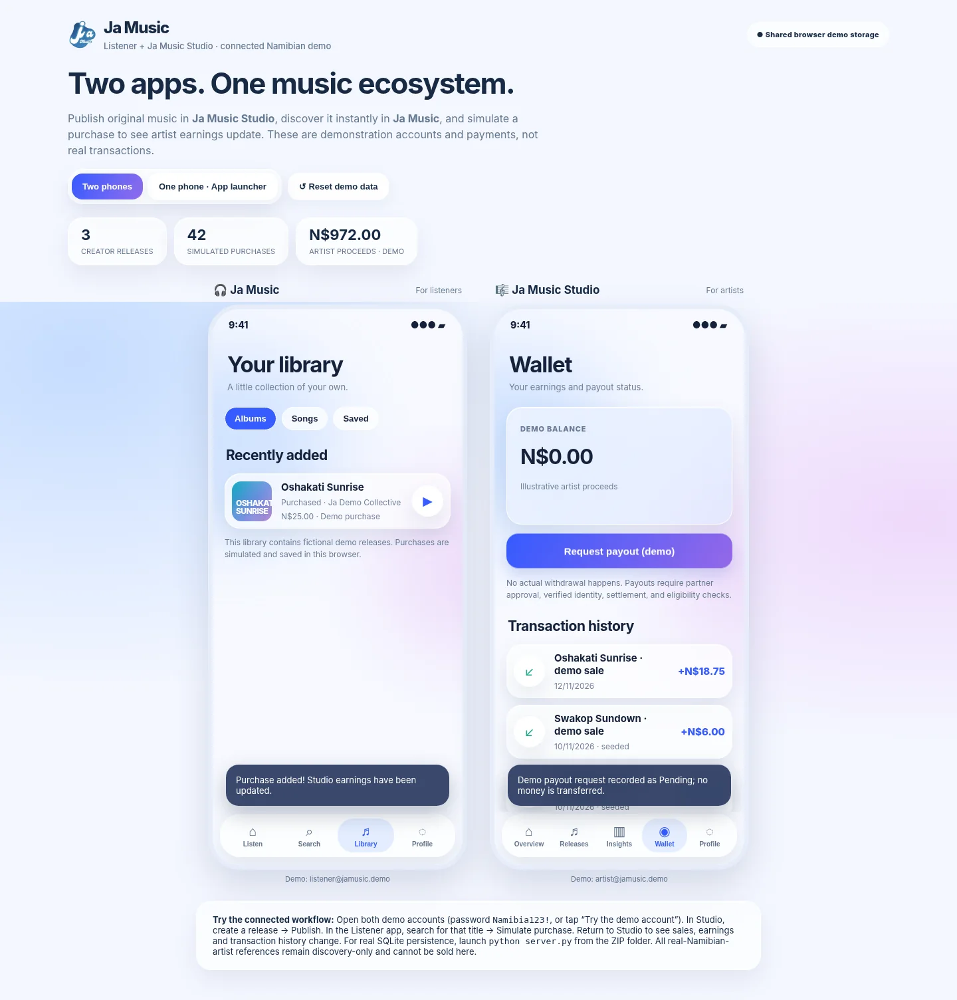

♫FOR LISTENERS
Ja Music
Find the sound of home.
Explore, preview and collect music from Namibian creators in a simple, welcoming space.↗
A better connection between Namibian artists and the people who love their music. Two apps, one bold vision, and more opportunities for our own voices to be heard.
Namibian talent has never been the problem. Access to the right tools, local distribution and meaningful earning opportunities is where the story needs to change.
Ja Music is being designed to give independent creators a direct way to share their work with fans, while making local music more accessible and discoverable. Our goal goes beyond building another music player: we want to help turn creativity into opportunity.
Why we're building itGive creators a dedicated place to publish, understand and build around their music.
Think locally about affordability, payment access and how people discover music.
Celebrate Namibia's styles, languages, communities and next generation of voices.
Built separately for the people who make music and the people who make it matter.
The current prototype demonstrates an entire creator-to-listener journey, from publishing a release to a simulated sale.
In Studio, a creator prepares an original release, adds pricing and publishes it to the shared demo catalogue.
The release appears in Ja Music, where fans can search, preview the experience and explore the artist.
A simulated purchase adds it to the listener's library and updates Studio's sales and earnings ledger.
Two interactive phone apps. A connected catalogue. Simulated sales and artist earnings. Switch between both sides of the music ecosystem and see how Ja Music works.

JA MUSIC · CONNECTED DEMOJa Music is a Namibian digital music marketplace concept with one simple ambition: help local artists earn from their creativity and give listeners an accessible way to support the music they love.
We're exploring how technology, local-first product design and future payment partnerships could make music discovery and purchasing feel more natural for Namibians. The listener app and artist Studio are our proof-of-concept for that vision.
We're proud of what the demo shows, and clear about what it doesn't. The current build is a prototype for learning, testing and demonstrating the Ja Music vision.
Two linked app experiences
Original-release publishing
Discover and demo purchasing
Library, earnings and sales views
Local SQLite demo option
Licensed music distribution
Real financial transactions
Approved telecom billing
Production-grade accounts
Real artist payouts
Not yet. This is an interactive proof-of-concept showing how our two planned apps would work together. It does not yet provide licensed commercial streaming or real purchases.
Yes. Open the live prototype and choose the two-phone mode. Use the demo accounts supplied on the page, then publish a release in Studio and make a simulated purchase in the listener app.
Airtime-based payment is part of Ja Music's original vision, not a connected payment method today. It would need technical, regulatory and commercial approval from relevant providers.
It includes reference listings for familiar Namibian artists and fictional example releases. Those references are not licensed songs for sale or playback. Only demo or rights-cleared audio is used for interactive demonstrations.
For project questions, prototype feedback or potential collaboration, email erican16@gmail.com.
A platform inspired by Namibia's artists, listeners and limitless creative potential.